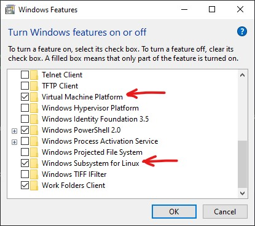
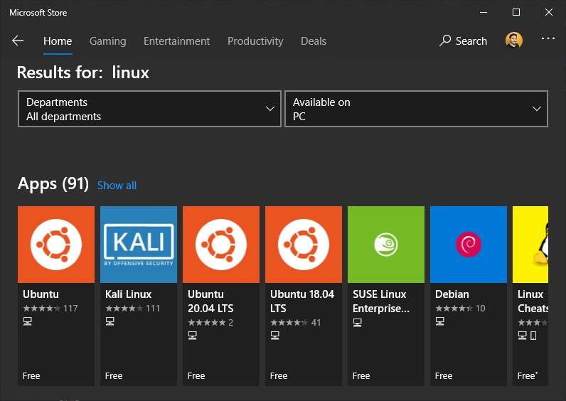

How to install WSL ?
- Open the "Turn Windows features on or off" panel from the search bar.
- Check two components:
- Restart your PC.
- Go to the Microsoft Store and search for Linux.
- Install your favourite linux distro and open it from the Start menu.
- On First Start, it'll complete the intallation of the distro and will take few seconds.
- After that the distro is all yours !
1. Virtual Machine Platform2. Windows Subsystem for Linux

Some useful WSL commands
- Start your Default distro.
wsl - Start a specific distro.
wsl -d distroName - List all your distros and check their status.
wsl -l -v - Make a specific distro your Default distro.
wsl --set-default distroName - Change the version of your distro.
wsl --set-version distroName version(1 or 2) - Change your default WSL version.
wsl --set-default-version version(1 or 2) - Close all your running distros.
wsl --shutdown - Close a specific distro.
wsl --terminate distroName - Uninstall a distro.
wsl --unregister distroName
Do you know that WSL2 uses a real LINUX KERNEL and an EXT4 File System ?
If you want to know more How-Tos and tricks on WSL2, which is much much faster than WSL1, go to THIS link.